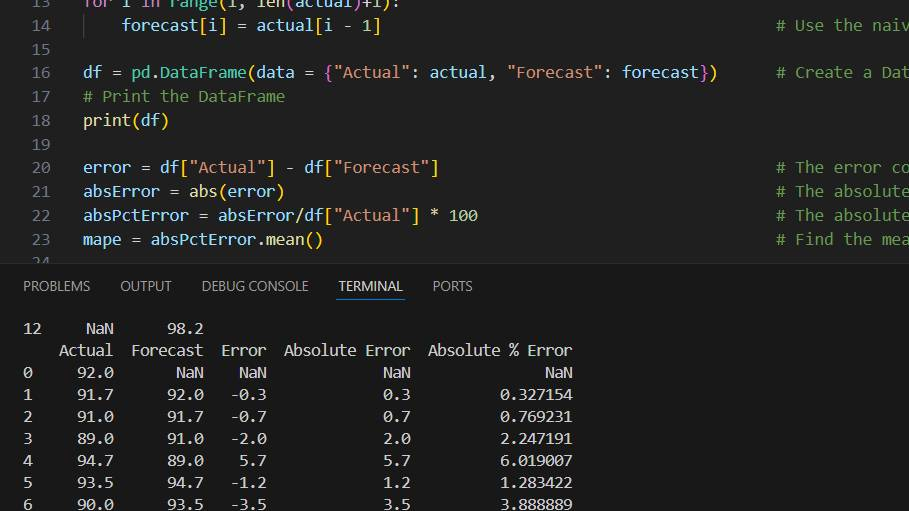

My Academic Work
Naive Method
This method is an analysis of a predetermined set of data using the naive method. After generating a simple forecast, the program then calculates errors, absolute errors, and absolute percentage errors. Using that data, the MAPE is calculated.
Below are the results of a simple data series [92.0, 91.7, 91.0, 89.0, 94.7, 93.5, 90.0, 89.8, 91.2, 87.2, 93.8, 98.2] when inputted into the program.
| Actual | Forecast | Error | Absolute Error | Absolute % Error |
|---|---|---|---|---|
| 92.0 | NaN | NaN | NaN | NaN |
| 91.7 | 92.0 | -0.3 | 0.3 | 0.327154 |
| 91.0 | 91.7 | -0.7 | 0.7 | 0.769231 |
| 89.0 | 91.0 | -2.0 | 2.0 | 2.247191 |
| 94.7 | 89.0 | 5.7 | 5.7 | 6.019007 |
| 93.5 | 94.7 | -1.2 | 1.2 | 1.283422 |
| 90.0 | 93.5 | -3.5 | 3.5 | 3.888889 |
| 89.8 | 90.0 | -0.2 | 0.2 | 0.222717 |
| 91.2 | 89.8 | 1.4 | 1.4 | 1.535088 |
| 87.2 | 91.2 | -4.0 | 4.0 | 4.587156 |
| 93.8 | 87.2 | 6.6 | 6.6 | 7.036247 |
| 98.2 | 93.8 | 4.4 | 4.4 | 4.480652 |
| NaN | 98.2 | NaN | NaN | NaN |
Project Title 2

Description of Project 2.